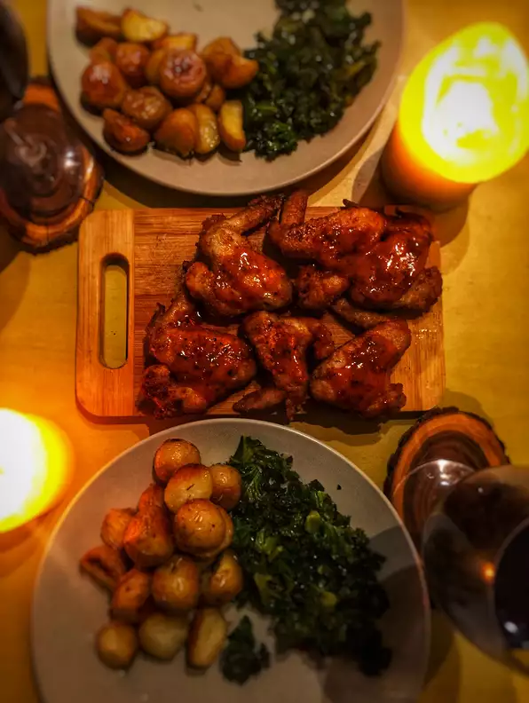

Restaurant-Style Buffalo Chicken Wings

Description
There's no need to go out or even order in when you're craving delicious, spicy hot wings. Instead, next time you want your Buffalo wing fix, try this top-rated recipe. Grab your favorite dipping sauce and celery sticks because this is about to be your new go-to hot wings recipe.
You'll never be disappointed by dry or not-hot-enough wings ever again!
Coat the Wings
Coat the chicken wings with a mixture of flour, paprika, cayenne pepper, and salt. Refrigerate coated wings for at least an hour.
Make the Hot Wings Sauce
In a saucepan on the stove, combine butter, hot sauce, pepper, and garlic. Stir until butter is melted, then remove from heat and reserve for later.
Fry the Wings
Fry the chicken wings in a skillet filled with oil heated to 375 degrees F. Remove the wings and place them on a paper-towel lined plate to remove the excess oil.
Coat with Hot Wings Sauce
Drizzle the hot wings sauce over the fried wings or place the hot wings in a bowl with the sauce and mix together until combined.
Ingredients
- ½ cup all-purpose flour
- ¼ teaspoon ground paprika
- ¼ teaspoon cayenne pepper
- ¼ teaspoon salt
- 10 chicken wings
- 2 cups vegetable oil for frying, or as needed
- ¼ cup butter
- ¼ cup hot sauce
- 1 pinch ground black pepper
- 1 pinch garlic powder
Directions
- Whisk together flour, paprika, cayenne pepper, and salt in a small bowl.
- Place chicken wings in a single layer in a 9x13-inch glass baking dish. Sprinkle flour mixture over top and toss until wings are evenly coated. Cover and refrigerate for 1 to 1 1/2 hours.
- Add about 1 inch oil to a deep, heavy skillet; heat to 375 degrees F (190 degrees C). (The oil should be just enough to cover wings entirely.)
- While the oil is coming to temperature, combine butter, hot sauce, pepper, and garlic powder in a small saucepan over low heat. Cook and stir until butter is melted and mixture is thoroughly blended.
- Fry coated wings in the hot oil for 10 to 15 minutes, or until they begin to crisp and turn brown. Maintain the oil temperature while cooking.
- Remove wings from the oil and place on a paper towel-lined plate.
- Transfer wings to a platter and drizzle hot sauce over top; or mix wings and hot sauce in a bowl until coated. Serve.
HOME